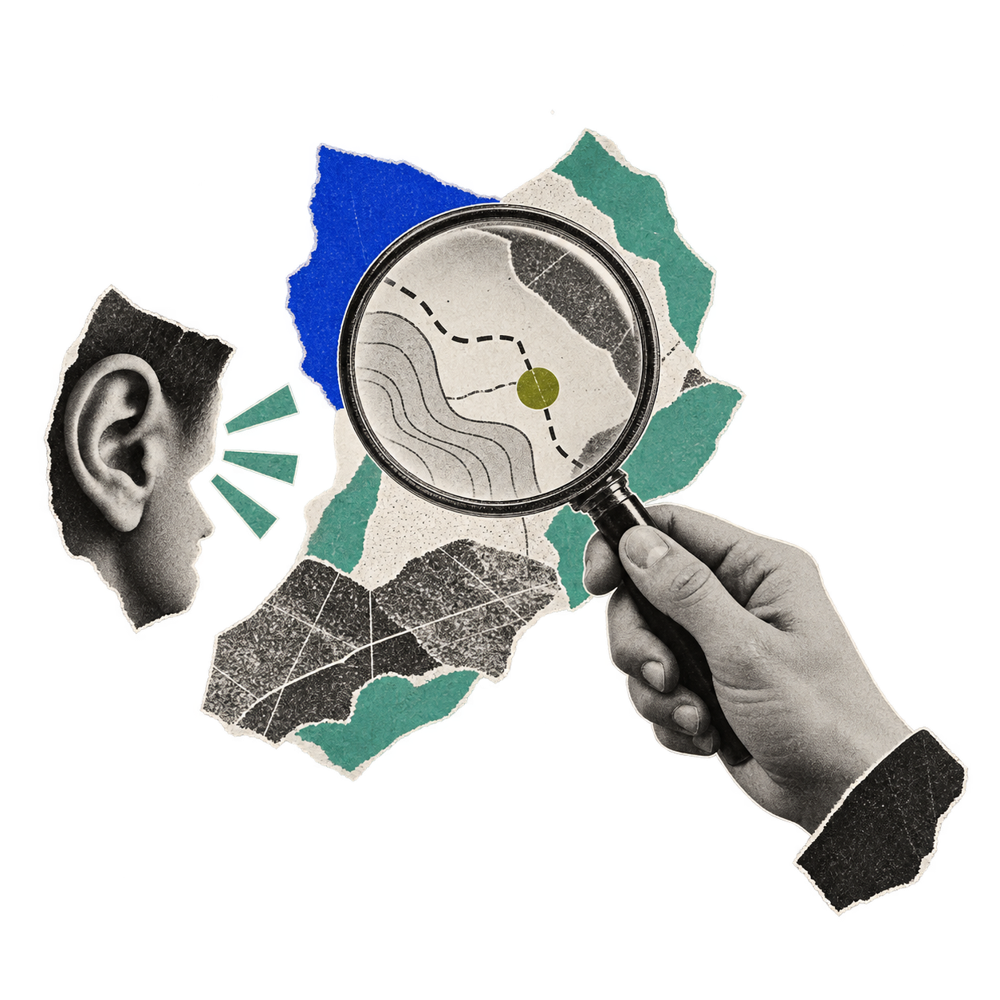

Facilitation
- Workshop design and facilitation
- Leadership and team alignment
- Stakeholder engagement
- Community consultation and dialogue
- Difficult conversations
- Annual meetings, offsites and retreats
- Online and hybrid facilitation
I design and lead research, workshops and co-design processes for problems that need a social and behavioural lens.
Sometimes that means an annual meeting. Sometimes it means months of interviews, co-design and difficult conversations. Sometimes it’s a data dashboard. I work across Australia and internationally, in person and online.
I currently undertake consulting projects through Think Change Resolve (TCR). Get in touch and we can explore how our team can help.

Small practices for better conversations and decisions.
I’m currently testing this offer at the intersection of meditation, facilitation and organisational life.
Workshops can focus on moments such as:
I’m happy to run a pilot workshop for your team at no cost in exchange for honest feedback. Get in touch.
I combine established and experimental methods in social research, stakeholder engagement and co-design to fit the problem and people I work with.
Understanding what shapes attention, emotion, decisions and group dynamics, then designing solutions, programs, communications and campaigns that work with how people think.
Bringing statistics, interviews and lived experience into the same view, awkward contradictions included, so the findings that matter reach the people making decisions. Methods include focus groups, questionnaire design, data analysis in R, Qualitative Comparative Analysis (QCA) and SenseMaker.
Looking at relationships, assumptions and stuck patterns, and what may be shifting underneath them. I trained in Theory U with the Presencing Institute and in futures thinking with the Institute for the Future, and have applied both in campaign and program design.
Giving the people inside the system a real role in understanding and shaping what happens next, including communities that standard consultation misses, using creative formats like listening tours or digital journals.
I co-designed and ran a series of campaign accelerators for various global campaign teams on how to create campaigns that are aimed at changing people’s minds about emotionally and socially difficult topics. I supported the teams post-accelerator, helping with MEL frameworks and sensemaking.
A multi-stage process where our team evaluated a University’s existing Indigenous Strategy through engagement with students and staff and analysis of available data. We then ran an extensive co-design process to shape the successor strategy.
Research designed to get past the official answer: questionnaire, analysis, and synthesis to understand what personal issues and character traits were shaping policy engagement decisions, to understand how to craft better engagement strategies, and where change might be possible.
I consult through Think Change Resolve (TCR). Send me a note about the people involved, what feels stuck and what you need to happen, and I can bring the enquiry to our team.
Discuss a project